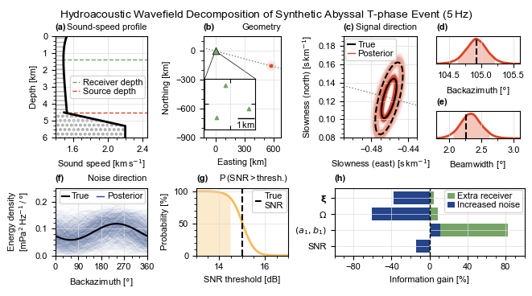
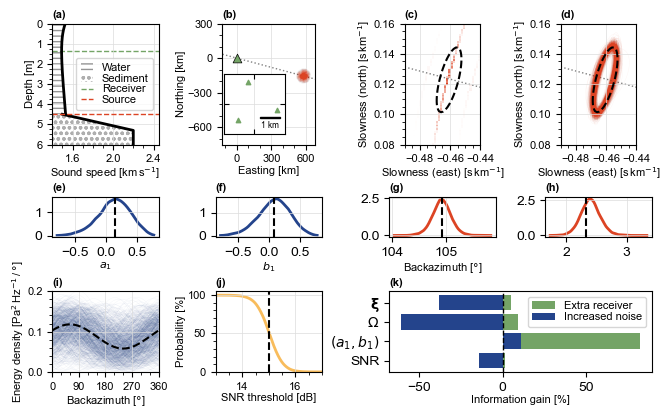
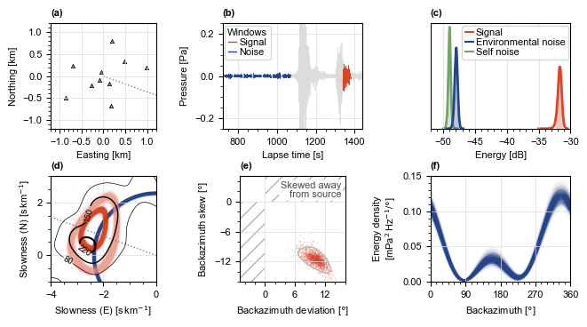

[1]:
#__ Import: Numerical __
import numpy as np
from scipy.stats import gaussian_kde
from scipy.ndimage import gaussian_filter
#__ Import: Topophone2 __
from topophone2.utils.read import read_txt
from topophone2.inversion import MarginalStats
from topophone2.modelling import ArrayCovarianceModel
from topophone2.utils.math import density_params, harmonic2D_density, density_function
#__ Import: Plotting __
import matplotlib.pyplot as plt
from mpl_toolkits.axes_grid1.anchored_artists import AnchoredSizeBar
import matplotlib.font_manager as fm
from matplotlib.colors import LinearSegmentedColormap, to_rgb
import matplotlib.tri as tri
import matplotlib.ticker as ticker
from matplotlib.gridspec import GridSpec
from matplotlib.lines import Line2D
from mpl_toolkits.axes_grid1.inset_locator import inset_axes
import cmcrameri.cm as cmc
from matplotlib.patches import Patch, ConnectionPatch, Rectangle
#__ Set up: Plotting __
theme = ['#DC4424', '#74A466', '#24448C', '#F8BC5C']
small, large = 8, 10
plt.rcParams["font.sans-serif"] = ['Arial']
cmap0 = LinearSegmentedColormap.from_list("cmap0", ["white", theme[0]])
def lighten(colour, amount=0.5):
"""Blend a colour towards white; amount=0 is unchanged, 1 is white."""
rgb = np.array(to_rgb(colour))
return tuple(1 - (1 - amount) * (1 - rgb))
theme0_light = lighten(theme[0])
Hello from topophone2!
An NVIDIA GPU may be present on this machine, but a CUDA-enabled jaxlib is not installed. Falling back to cpu.
Synthetic data#
[2]:
#__ Read array geometry __
out = read_txt(f"./data/TRIAD_15DB/TRIAD_FULL_15DB_topophone2.txt")
x = out[1] # Receiver position [m] (receiver, direction)
#__ Load synthetic parameters __
sim_data = np.load('./data/SYNTHETICS.npz')
#__ Unpack: Signal __
slowness_T = sim_data['slowness_T'] # Horizontal slowness [s.m-1] (source, mode, direction)
energy_T = sim_data['energy_T'] # Recorded energy [uPa2.Hz-1] (source, mode)
xS_T = sim_data['xS_T'] # Source location [m] (source, direction)
w_energy = sim_data['w_energy'] # Relative source energy [uPa2.Hz-1] (source)
#__ Unpack: Noise __
slowness_J = sim_data['slowness_J'] # Horizontal slowness [s.m-1] (source, direction)
energy_J = sim_data['energy_J'] # Recorded energy [uPa2.Hz-1] (source)
az_J = sim_data['az'] # Source azimuth [deg] (source)
s0_J = sim_data['s0'][0] # Noise slowness [s.m-1]
#__ Unpack: Sound speed __
z = sim_data['z'] # Depth [m] (depth,)
c_z = sim_data['c_z'] # Sound speed [m.s-1] (depth,)
sed_thick = 800.0
z_sed = np.linspace(z[-1], z[-1] + sed_thick, 9)
c_sed = np.linspace(1500., 2200., 9)
z_sed = np.append(z_sed, 10e3)
c_sed = np.append(c_sed, c_sed[-1])
z_max = 4.5e3 # Maximum depth [m]
zr = 1.37e3 # Receiver depth [m]
#__ Estimate energy density __
slowness_T = slowness_T.reshape(-1, 2)
energy_T = energy_T.reshape(-1)
good = (
np.all(np.isfinite(slowness_T), axis=1)
& np.isfinite(energy_T)
& (energy_T > 1e-12*energy_T.max())
)
s_good = slowness_T[good]
w_good = energy_T[good]
sx, sy = s_good[:,0], s_good[:,1]
pad = 0.15 * max(np.ptp(sx), np.ptp(sy))
ex = np.linspace(sx.min()-pad, sx.max()+pad, 200+1)
ey = np.linspace(sy.min()-pad, sy.max()+pad, 200+1)
xc, yc = 0.5*(ex[1:] + ex[:-1]), 0.5*(ey[1:] + ey[:-1])
gx, gy = np.meshgrid(xc, yc, indexing='ij')
w_density, _, _ = np.histogram2d(sx, sy, bins=[ex, ey], weights=w_good) # [x, y]
w_density /= np.diff(ex)[:,None] * np.diff(ey)[None,:]
w_density /= w_density.max()
#__ Unpack: True model __
m_true = sim_data['m_true']
#__ Read: Inversion results __
m = np.load('./models/TRIAD_15DB/inversion_results.npz')['m']
w_T = m[:,0]
xi = m[:,1:3]
sigma = m[:,3:5]
corr = m[:,5]
w_J = m[:,6]
a = m[:,7]
b = m[:,8]
#__ Calculate SNR cumulative distribution __
snr_stats = MarginalStats((w_T-w_J)[:,None])
pcum_snr, pcum_snr_vec = snr_stats.probability_density(i=0, cumulative='reverse')
#__ Calculate backazimuth distribution __
_, _, xi_circ, _, sigma_circ, _ = density_params(xi, sigma, corr[:,None])
_, _, xi_circ_true, _, sigma_circ_true, _ = density_params(m_true[1:3][None,:], m_true[3:5][None,:], m_true[5][None,None])
stats_xi = MarginalStats(xi_circ)
stats_sigma = MarginalStats(sigma_circ)
p_az, p_az_vec = stats_xi.probability_density(i=1)
p_bw, p_bw_vec = stats_sigma.probability_density(i=1)
#__ Calculate harmonic coefficient distributions __
stats = MarginalStats(m)
p_a, p_a_vec = stats.probability_density(i=7)
p_b, p_b_vec = stats.probability_density(i=8)
#__ Information gain __
ig = np.load('./data/figures/info-gain.npz')
rel_IG_rec = ig['rel_IG_rec']
rel_IG_noisy = ig['rel_IG_noisy']
#__ Noise field __
baz = np.linspace(0, 360, 360)
rho = harmonic2D_density((baz + 180) % 360, a[:,None], b[:,None])
rho_true = harmonic2D_density((baz + 180) % 360, m_true[7][None,None], m_true[8][None,None])
#__ Calculate density functions __
density = density_function((gx,gy), xi[:1000], sigma[:1000], corr[:1000,None])
density_true = density_function((gx,gy), m_true[1:3][None,:], m_true[3:5][None,:], m_true[5][None,None])
density /= np.max(density, axis=(1,2), keepdims=True)
density_true /= np.max(density_true, axis=(1,2), keepdims=True)
#__ Credible intervals __
snr_90, _ = snr_stats.credible_interval(80, [0])
baz_05, baz_95 = stats_xi.credible_interval(90, [1])
bw_05, bw_95 = stats_sigma.credible_interval(90, [1])
#__ Source-energy density __
z_hypo, alpha, f0 = 15.0e3, 0.02, 5.0
srcR, srcBz, srcRd = 600.0e3, 105.0, 60.0e3
src0 = srcR * np.array([np.sin(np.radians(srcBz)), np.cos(np.radians(srcBz))])
Xs, Ys = np.meshgrid(
np.linspace(src0[0]-1.2*srcRd, src0[0]+1.2*srcRd, 300),
np.linspace(src0[1]-1.2*srcRd, src0[1]+1.2*srcRd, 300),
indexing='ij'
)
r_epi = np.hypot(Xs - src0[0], Ys - src0[1])
d_s = np.sqrt((z_hypo - z_max)**2 + r_epi**2)
E_src = (10**(-alpha*(d_s/1e3)*f0/20) / d_s)**2 * (r_epi <= srcRd)
E_src /= E_src.max()
[24]:
#__ Summarise statistics __
def summary(mi, pc=90, interval=True, scale=1):
stats = MarginalStats(mi[:,None])
p, p_vec = stats.probability_density(i=0)
mi_lo, mi_hi = stats.credible_interval(pc, [0])
ml, lo, hi = scale*p_vec[np.argmax(p)], scale*mi_lo, scale*mi_hi
if interval: return ml, lo-ml, hi-ml
else: return ml, lo, hi
#__ Apparent slowness __
print("Slowness mean:", *summary(xi_circ[:,0], scale=1e6))
print("Slowness beamwidth:", *summary(sigma_circ[:,0], scale=1e6))
#__ Backazimuth __
print("Backazimuth mean:", *summary((xi_circ[:,1]-180)%360))
print("Backazimuth beamwidth:", *summary(sigma_circ[:,1]))
#__ Noise coefficients __
print("a1:", *summary(a))
print("b1:", *summary(b))
#__ SNR __
print("SNR:", *summary(w_T-w_J))
print("SNR threshold", summary(w_T-w_J, 80, False)[1])
#__ Information gain __
print("Noisy:", rel_IG_noisy)
print("Quad:", rel_IG_rec)
Slowness mean: 476.8299608387702 [-0.99396277] [1.15810568]
Slowness beamwidth: 4.595253375891868 [-1.21437018] [1.75172742]
Backazimuth mean: 104.9210623346701 [-0.28986747] [0.286777]
Backazimuth beamwidth: 2.3436471265305303 [-0.28422996] [0.28208446]
a1: 0.15680002548687 [-0.47143281] [0.38217282]
b1: 0.11678029618967356 [-0.4671605] [0.36639684]
SNR: 14.983915238978039 [-0.67827767] [0.73722611]
SNR threshold [14.48131023]
Noisy: [-38.13917321 -60.7417865 11.21533376 -14.21460824]
Quad: [ 4.89156129 8.9735713 82.20542323 1.37848054]
[34]:
#________ CREATE FIGURE ________#
#__ Figure __
fig = plt.figure(
figsize = (6.5, 3),
facecolor = 'white',
layout = 'constrained'
)
#__ Axes __
gs = GridSpec(
figure = fig,
nrows = 2,
ncols = 4,
height_ratios = [3, 2]
)
gs_pdf = gs[0,3].subgridspec(nrows=2, ncols=1)
axs = [
# First row
fig.add_subplot(gs[0,0]), # axs[0] is the sound-speed profile (a)
fig.add_subplot(gs[0,1], aspect='equal'), # axs[1] is the source-receiver geometry (b)
fig.add_subplot(gs[0,2], aspect='equal'), # axs[2] is the inverted signal (c)
fig.add_subplot(gs_pdf[0]), # axs[3] is the pdf of backazimuth (d)
fig.add_subplot(gs_pdf[1]), # axs[4] is the pdf of backazimuth beamwidth (e)
# Second row
fig.add_subplot(gs[1,0]), # axs[5] is the noise field (f)
fig.add_subplot(gs[1,1]), # axs[6] is the SNR (g)
fig.add_subplot(gs[1,2:4]), # axs[7] is information gain (h)
]
#__ Create inset axes __
ax_in = axs[1].inset_axes([0.02, 0.01, 0.65, 0.65], zorder=5) # [x0, y0, width, height]
ax_in.set_facecolor('white')
ax_in.set_aspect('equal')
#__ Labels __
for ax, title, xlab, ylab in zip(axs,
[
r"Sound-speed profile", r"Geometry", r"Signal direction",
None, None,
r"Noise direction", r"P$\,$(SNR$\,$>$\,$thresh.)", None
],
[
r"Sound speed [km$\,$s$^{-1}$]", r"Easting [km]", r"Slowness (E) [s$\,$km$^{-1}$]",
r"Backazimuth [$\degree$]", r"Beamwidth [$\degree$]",
r"Backazimuth [$\degree$]", r"SNR threshold [dB]", r"Information gain [%]"
],
[
r"Depth [km]", r"Northing [km]", r"Slowness (N) [s$\,$km$^{-1}$]",
None, None,
"Energy density\n"+r"[mPa$^2$$\,$Hz$^{-1}$$\,$/$\,\degree$]", r"Probability [%]", None
]
):
# if (title is not None): ax.set_title(title, loc='right', fontsize=small)
if (xlab is not None): ax.set_xlabel(xlab, fontsize=small)
if (ylab is not None): ax.set_ylabel(ylab, fontsize=small)
#__ Ticks __
for ax, xlims, ylims, xticks, yticks in zip(axs,
[
(1.4,2.45), (-125,680), (-0.51,-0.42),
(104.3,105.6), (1.8,3.1),
(0,360), (13,17), (-100,100)
],
[
(6.0,0.0), (-900,150), (0.08,0.20),
(0.0,2.7), (0.0,2.7),
(0,0.25), (0,105), None
],
[
(0.4,0.1), (300,100), (0.04,0.01),
(0.5,0.25), (0.5,0.25),
(90,30), (2,0.5), (40,10)
],
[
(1.0,0.25), (300,100), (0.02,0.005),
None, None,
(0.1,0.02), (50,10), None
]
):
if xlims is not None:
ax.set_xlim(*xlims)
if ylims is not None:
ax.set_ylim(*ylims)
if xticks is not None:
ax.xaxis.set_major_locator(ticker.MultipleLocator(xticks[0]))
ax.xaxis.set_minor_locator(ticker.MultipleLocator(xticks[1]))
else: ax.set_xticks([])
if yticks is not None:
ax.yaxis.set_major_locator(ticker.MultipleLocator(yticks[0]))
ax.yaxis.set_minor_locator(ticker.MultipleLocator(yticks[1]))
else: ax.set_yticks([])
ax.tick_params(labelsize=small)
ax.grid(color='gainsboro', linewidth=0.5)
#__ Ticks (inset) __
ax_in.set_xlim(-1.5,1.5)
ax_in.set_ylim(-1.5,1.5)
ax_in.set_xticks([0])
ax_in.set_yticks([0])
ax_in.tick_params(
which='both', direction='in',
top=True, right=True,
labelbottom=False, labelleft=False
)
ax_in.grid(color='gainsboro', linewidth=0.5)
#__ Panel labels, in reading order __
for ax, label in zip(axs, ['(a)', '(b)', '(c)', '(d)', '(e)', '(f)', '(g)', '(h)']):
ax.set_title(label, loc='left', fontsize=small, fontweight='bold')
#________ PLOT: SOUND-SPEED PROFILE ________#
#__ Water column __
axs[0].fill_betweenx(
1e-3*z, 0.0, 1e-3*c_z,
facecolor='none', edgecolor='0.7',
hatch='---', linewidth=0.0, zorder=0.9
)
axs[0].plot(1e-3*c_z, 1e-3*z, color='k', linewidth=2.0, zorder=2)
#__ Sediment column __
axs[0].fill_betweenx(
1e-3*z_sed, 0.0, 1e-3*c_sed,
facecolor='none', edgecolor='0.7',
hatch='ooo', linewidth=0.0, zorder=0.9
)
axs[0].plot(1e-3*c_sed, 1e-3*z_sed, color='k', lw=2.0, zorder=2)
#__ Opaque white base (hides anything with lower zorder) __
for zz, cc in [(z, c_z), (z_sed, c_sed)]:
axs[0].fill_betweenx(1e-3*zz, 0.0, 1e-3*cc, facecolor='white', edgecolor='none', zorder=0.8)
#__ Receiver/source depths __
axs[0].axhline(1e-3*zr, ls='--', color=theme[1], lw=1.0, zorder=0.5, label='Receiver depth')
axs[0].axhline(1e-3*z_max, ls='--', color=theme[0], lw=1.0, zorder=0.5, label='Source depth')
#__ Legend __
axs[0].legend(fontsize=small, loc='center right', labelspacing=0.1,
handlelength=0.8, handleheight=0.6, handletextpad=0.3,
borderpad=0.3, borderaxespad=0.2
)
#________ PLOT: SOURCE-RECEIVER GEOMETRY ________#
#__ Plot source energy __
axs[1].contourf(
1e-3*Xs, 1e-3*Ys, E_src,
levels=5, cmap='cmc.lajolla', vmin=0.02, extend='max',
zorder=1
)
#__ Plot array location __
axs[1].scatter(
0, 0,
c=theme[1], s=40, marker='^', edgecolors='k', linewidths=0.5,
zorder=2
)
#__ Plot receivers __
ax_in.scatter(
1e-3*x[:,0], 1e-3*x[:,1],
c=theme[1], s=10, marker='^',
zorder=1
)
#__ Scale bar (inset) __
scalebar = AnchoredSizeBar(
ax_in.transData,
1.0, r"1$\,$km",
loc='lower right',
pad=0.0, borderpad=0.0, sep=1,
color='k', frameon=False,
size_vertical=0.02,
fontproperties=fm.FontProperties(size=small)
)
ax_in.add_artist(scalebar)
#__ Plot reference line __
axs[1].axline(
(0,0), (np.sin(np.radians(105)), np.cos(np.radians(105))),
ls=':', color='gray', lw=1.0,
zorder=1
)
#__ Connector lines: inset top corners -> array triangle __
for corner in [(0.0, 1.0), (1.0, 1.0)]:
axs[1].add_artist(ConnectionPatch(
xyA=corner, coordsA=ax_in.transAxes, # inset corner, in inset axes fraction
xyB=(0.0, 0.0), coordsB=axs[1].transData, # array position, in panel (b) data
color='k', lw=0.5, zorder=1
))
#________ SIGNAL FIELD ________#
#__ Plot reference line __
axs[2].axline(
(0,0), (np.sin(np.radians(105)), np.cos(np.radians(105))),
ls=':', color='gray', lw=1.0,
zorder=1.6
)
#__ True __
axs[2].contour(
1e3*gx, 1e3*gy, density_true[0], levels=[0.1,0.5],
colors='k', linewidths=1.5, linestyles=['--','-'],
zorder=2
)
handles = [
Line2D([], [], color='k', ls='-', lw=1.5, label='True'),
Line2D([], [], color=theme[0], lw=1.0, label='Posterior'),
]
axs[2].legend(handles=handles, fontsize=small, loc='upper left', labelspacing=0.1,
handlelength=0.8, handleheight=0.6, handletextpad=0.3,
borderpad=0.3, borderaxespad=0.2)
#__ Estimates __
for i in range(1000):
axs[2].contour(
1e3*gx, 1e3*gy, density[i], levels=[0.1,0.5],
colors=[theme0_light, theme[0]], linewidths=0.3, alpha=0.05,
zorder=1
)
axs[2].set_rasterization_zorder(1.5)
#________ PROBABILITY DENSITY FUNCTIONS ________#
#__ Backazimuth __
axs[3].plot(
(p_az_vec-180)%360, p_az,
color=theme[0], lw=2.0,
zorder=1
)
axs[3].axvline((xi_circ_true[0,1]-180)%360, ls='--', color='k', lw=1.5, zorder=2)
in_ci = np.logical_and(p_az_vec>=baz_05, p_az_vec<=baz_95)
axs[3].fill_between((p_az_vec[in_ci]-180)%360, p_az[in_ci], color=theme[0], alpha=0.3, lw=0, zorder=1)
#__ Backazimuth beamwidth __
axs[4].plot(
p_bw_vec, p_bw,
color=theme[0], lw=2.0,
zorder=1
)
axs[4].axvline(sigma_circ_true[0,1], ls='--', color='k', lw=1.5, zorder=2)
in_ci = np.logical_and(p_bw_vec>=bw_05, p_bw_vec<=bw_95)
axs[4].fill_between(p_bw_vec[in_ci], p_bw[in_ci], color=theme[0], alpha=0.3, lw=0, zorder=1)
#________ NOISE FIELD ________#
#__ True model __
axs[5].plot(
baz, 1e-6*rho_true[0] * 10**(75/10) * np.pi/180,
color='k', lw=1.5, ls='-',
zorder=2
)
handles = [
Line2D([], [], color='k', ls='-', lw=1.5, label='True'),
Line2D([], [], color=theme[2], lw=1.0, label='Posterior'),
]
axs[5].legend(handles=handles, ncols=2, fontsize=small, loc='upper right', labelspacing=0.1,
handlelength=0.8, handleheight=0.6, handletextpad=0.3,
borderpad=0.3, borderaxespad=0.2, columnspacing=0.8)
#__ Estimates __
for i in range(1000):
if np.any(rho[i] < 0): continue
axs[5].plot(
baz, 1e-6*rho[i] * 10**(m[i,6]/10) * np.pi/180,
color=theme[2], lw=0.3, alpha=0.05,
zorder=1, rasterized=True
)
#________ SNR ________#
axs[6].plot(
pcum_snr_vec, 100*pcum_snr,
color=theme[3], lw=2.0,
zorder=1
)
axs[6].axvline(15, ls='--', color='k', lw=1.5, zorder=2)
in_ci = np.logical_and(pcum_snr_vec>=0., pcum_snr_vec<=snr_90)
axs[6].fill_between(pcum_snr_vec[in_ci], 100*pcum_snr[in_ci], color=theme[3], alpha=0.3, lw=0, zorder=1)
#__ Legend __
handles = [
Line2D([], [], color='k', ls='--', lw=1.5, label='True\nSNR')
]
axs[6].legend(handles=handles, fontsize=small, loc='upper right', labelspacing=0.3,
handlelength=0.8, handleheight=0.6, handletextpad=0.3,
borderpad=0.3, borderaxespad=0.2)
#________ INFORMATION GAIN ________#
#__ Labels __
y = np.arange(4)[::-1]
labels = [r"$\mathbf{\xi}$", r"$\mathbf{\Omega}$", r"$\left(a_1, b_1\right)$", r"SNR"]
axs[7].set_yticks(y, labels)
#__ Extra receiver __
axs[7].barh(
y, rel_IG_rec,
color=theme[1], label="Extra receiver",
zorder=1
)
#__ Noise increase __
axs[7].barh(
y, rel_IG_noisy,
color=theme[2], label="Increased noise",
zorder=1
)
#__ Plot neutral __
axs[7].axvline(0, c='k', ls='--', lw=1.0, zorder=2)
#__ Legend __
axs[7].legend(fontsize=small, loc='upper right', labelspacing=0.1,
handlelength=0.8, handleheight=0.6, handletextpad=0.3,
borderpad=0.3, borderaxespad=0.2)
#__ Spacing __
fig.get_layout_engine().set(h_pad=0.01, hspace=0.0)
#__ Show figure __
fig.show()
# fig.savefig('./data/figures/Figure_1.pdf', dpi=300, bbox_inches='tight')
/tmp/ipykernel_1319/3620431491.py:325: UserWarning: FigureCanvasAgg is non-interactive, and thus cannot be shown
fig.show()

Real data#
[56]:
#__ Read data __
data = np.load('./data/hukkakero/IS37_hukkakero_2016-08-19.npz')
u_t = data['u_t'] # Waveform data [Pa] (receiver, time)
t = data['t'] # Lapse time vector [s] (time,)
x = data['x'] # Receiver location [m] (receiver, direction)
#__ Select signal and noise windows __
T_w = 20.0 # Window half-width [s]
t_w_s = 1360 # Signal-window central time [s]
t_w_n = [750, 800, 850, 900, 950, 1000, 1050] # Noise-window central times [s]
#__ Masks __
win_s = (np.abs(t - t_w_s) < T_w) # Signal window mask (time,)
win_n = [
(np.abs(t - t_w_ni) < T_w) # Noise window mask (time,)
for t_w_ni in t_w_n
]
#__ Read results __
m = np.loadtxt(f"./models/hukkakero/model-samples_iteration-30000.txt")
#__ Unpack results __
w_s = m[:,0]
xi = m[:,1:3]
sigma = m[:,3:5]
corr = m[:,5]
alpha = m[:,6:8]
w_n1 = m[:,8]
w_n2 = m[:,9]
s0 = m[:,10]
a = m[:,11:13]
b = m[:,13:15]
#__ Rotate results __
wd, mean, xi_circ, mean_circ, sigma_circ, wd_circ = density_params(xi, sigma, corr[:,None], alpha)
#__ Noise field __
baz = np.linspace(0, 360, 360)
rho = harmonic2D_density((baz + 180) % 360, a, b)
#__ Marginal statistics __
stats = MarginalStats(m)
stats_circ = MarginalStats(np.hstack((xi_circ, sigma_circ, wd_circ)))
p_ws, ws_vec = stats.probability_density(i=0)
p_wn1, wn1_vec = stats.probability_density(i=8)
p_wn2, wn2_vec = stats.probability_density(i=9)
ws_05, ws_95 = stats.credible_interval(90, [0])
wn1_05, wn1_95 = stats.credible_interval(90, [8])
wn2_05, wn2_95 = stats.credible_interval(90, [9])
#__ 2D kernel density on a grid __
def kde_2d(samples, npts=200, bounds=None, pad=0.1):
"""
Input
-----
samples : ``numpy.ndarray``
(sample, 2)
bounds : ``numpy.ndarray`` (optional)
[[lo0, hi0], [lo1, hi1]]; sample range padded by `pad` if None
Output
------
density : ``numpy.ndarray``
(npts, npts), indexed [dim0, dim1]
vecs : ``tuple`` of ``numpy.ndarray``
Grid vectors for each dimension
"""
if bounds is None:
lo, hi = samples.min(axis=0), samples.max(axis=0)
bounds = np.stack([lo - pad*(hi-lo), hi + pad*(hi-lo)], axis=1)
v0 = np.linspace(*bounds[0], npts)
v1 = np.linspace(*bounds[1], npts)
g0, g1 = np.meshgrid(v0, v1, indexing='ij')
density = gaussian_kde(samples.T)(np.vstack([g0.ravel(), g1.ravel()])).reshape(npts, npts)
return density, (v0, v1)
density, (v0, v1) = kde_2d(np.hstack((xi_circ[:,[1]],wd_circ[:,[1]])))
density /= np.max(density)
#__ Read: Signal + noise __
out = read_txt("./data/hukkakero/signal_topophone2.txt")
freq_Hz = out[0] # Frequency vector [Hz] (frequency)
x = out[1] # Receiver position [m] (receiver, direction)
Gamma_obs = out[2] # Array-covariance matrix [Pa2.Hz-1] (frequency, receiver, receiver)
N_obs = out[3] # Independent observations
freq = 2 * np.pi * freq_Hz
#__ Beamforming __
def slowness_grid(p_bounds, dp):
vecs = [np.linspace(p_min, p_max, int(round((p_max-p_min)/dp))+1) for (p_min, p_max) in p_bounds]
grid = np.meshgrid(*vecs, indexing='ij')
return np.stack([g.ravel() for g in grid], axis=-1), vecs
def bartlett_power(
Gamma : np.ndarray,
x : np.ndarray,
freq : np.ndarray,
p_bounds : list,
dp : float,
normalise : bool = False,
exclude_diag : bool = False,
chunk : int = 4096
):
"""
Bartlett (conventional, delay-and-sum) beam power from an array-covariance matrix.
Assumes Gamma[f, j, k] = E[u_j u_k^*] with NumPy's FFT sign convention, for which a
plane wave of slowness p has u_j ~ exp(-i w p.x_j). The steering vector is
a_j(p) = exp(-i w p.x_j) and B(p) = a^H Gamma a / N^2.
Input
-----
Gamma : ``numpy.ndarray``
Array-covariance matrix [Pa2.Hz-1]
(frequency, receiver, receiver)
x : ``numpy.ndarray``
Receiver position [m]
(receiver, direction)
freq : ``numpy.ndarray``
Angular frequency [rad.s-1]
(frequency,)
p_bounds : ``list``
(Minimum, maximum) slowness to search in each direction [s.m-1]
dp : ``float``
Slowness search interval [s.m-1]
normalise : ``bool`` (default ``False``)
Divide by the mean auto-power, so B lies in [0, 1] (comparable across frequencies)
exclude_diag : ``bool`` (default ``False``)
Use cross-terms only (j != k), removing the incoherent-noise floor
Output
------
B : ``numpy.ndarray``
Beam power [Pa2.Hz-1, or dimensionless if normalised]
(frequency, *slowness grid)
vecs : ``list`` of ``numpy.ndarray``
Slowness vector in each direction [s.m-1]
"""
#__ Slowness grid and travel times __
p, vecs = slowness_grid(p_bounds, dp) # (slowness, direction)
tau = p @ x.T # (slowness, receiver)
N = x.shape[0]
#__ Optionally drop the auto-power terms __
G = Gamma.copy()
if exclude_diag:
G[:, np.arange(N), np.arange(N)] = 0.0
#__ Beam power, chunked over slowness to bound memory __
B = np.empty((len(freq), len(p)))
for s0 in range(0, len(p), chunk):
a = np.exp(-1j * freq[:,None,None] * tau[None,s0:s0+chunk,:]) # (freq, slowness, receiver)
B[:, s0:s0+chunk] = np.einsum('fsj,fjk,fsk->fs', a.conj(), G, a).real
#__ Normalise __
if exclude_diag: B /= N*(N-1)
else: B /= N**2
if normalise:
auto = np.trace(Gamma, axis1=1, axis2=2).real / N # mean auto-power (frequency,)
B /= auto[:, None]
#__ Return output __
return B.reshape(len(freq), *[len(v) for v in vecs]), vecs
B, (px, py) = bartlett_power(
Gamma_obs, x, freq, # freq in rad/s, as you've defined it
p_bounds=[(-4.5e-3, 4.5e-3)]*2, dp=2e-5,
normalise=False
)
B_band = B.mean(axis=0)
#__ Density function __
N_g = 150 # points per axis
k = 5.0 # padding, in units of the scale
pad = k * np.percentile(sigma, 99, axis=0)
lo = np.percentile(xi, 1, axis=0) - pad
hi = np.percentile(xi, 99, axis=0) + pad
qx, qy = np.linspace(lo[0], hi[0], N_g), np.linspace(lo[1], hi[1], N_g)
gx, gy = np.meshgrid(qx, qy, indexing='ij')
N_m, chunk = 1000, 100
p = np.concatenate([
density_function((gx, gy), xi[i:i+chunk], sigma[i:i+chunk],
corr[i:i+chunk, None], alpha[i:i+chunk])
for i in range(0, N_m, chunk)
])
p /= np.nanmax(p, axis=(1, 2), keepdims=True)
[77]:
#________ CREATE FIGURE ________#
#__ Figure __
fig = plt.figure(
figsize = (6.5,3.5),
facecolor='white',
layout='constrained'
)
#__ Axes __
gs = GridSpec(
figure = fig,
nrows = 2,
ncols = 3
)
axs = [
fig.add_subplot(gs[0,0], aspect='equal'),
fig.add_subplot(gs[0,1]),
fig.add_subplot(gs[0,2]),
fig.add_subplot(gs[1,0], aspect='equal'),
fig.add_subplot(gs[1,1], aspect='equal'),
fig.add_subplot(gs[1,2])
]
#__ Labels __
for ax, title, xlab, ylab in zip(axs,
[
r"IS37 array", "19 Aug. 2016 (0.25\u20132.00"+r"$\,$Hz)", r"Wavefield components",
r"Signal direction", r"Skew direction", r"Noise direction"
],
[
r"Easting [km]", r"Lapse time [s]", r"Energy [dB]",
r"Slowness (E) [s$\,$km$^{-1}$]", r"Backazimuth deviation [$\degree$]", r"Backazimuth [$\degree$]"
],
[
r"Northing [km]", r"Pressure [Pa]", None,
r"Slowness (N) [s$\,$km$^{-1}$]", r"Backazimuth skew [$\degree$]", "Energy density\n"+r"[mPa$^2$$\,$Hz$^{-1}$/$\degree$]"
]
):
# if (title is not None): ax.set_title(title, loc='right', fontsize=small)
if (xlab is not None): ax.set_xlabel(xlab, fontsize=small)
if (ylab is not None): ax.set_ylabel(ylab, fontsize=small)
#__ Ticks __
for ax, xlims, ylims, xticks, yticks in zip(axs,
[
(-1.2,1.2), (t[0],t[-1]), (-52,-30),
(-4,0), (-5,14), (0,360)
],
[
(-1.2,1.2), (-0.25,0.25), (0,2.2),
(-1,3), (-14,5), (0,0.15)
],
[
(0.5,0.1), (200,50), (5,1),
(2,0.5), (6,2), (90,15)
],
[
(0.5,0.1), (0.2,0.05), None,
(2,0.5), (6,2), (0.05,0.01)
]
):
if xlims is not None:
ax.set_xlim(*xlims)
if ylims is not None:
ax.set_ylim(*ylims)
if xticks is not None:
ax.xaxis.set_major_locator(ticker.MultipleLocator(xticks[0]))
ax.xaxis.set_minor_locator(ticker.MultipleLocator(xticks[1]))
else: ax.set_xticks([])
if yticks is not None:
ax.yaxis.set_major_locator(ticker.MultipleLocator(yticks[0]))
ax.yaxis.set_minor_locator(ticker.MultipleLocator(yticks[1]))
else: ax.set_yticks([])
ax.tick_params(labelsize=small)
ax.grid(color='gainsboro', linewidth=0.5)
#__ Panel labels, in reading order __
for ax, label in zip(axs, ['(a)', '(b)', '(c)', '(d)', '(e)', '(f)']):
ax.set_title(label, loc='left', fontsize=small, fontweight='bold')
#________ PLOT: RECEIVER GEOMETRY ________#
#__ Plot receivers __
axs[0].scatter(
1e-3*x[:,0], 1e-3*x[:,1],
c=theme[1], s=10, marker='^',
zorder=1
)
#__ Plot reference line __
axs[0].plot(
(0,100*np.sin(np.radians(110))), (0, 100*np.cos(np.radians(110))),
ls=':', color='gray', lw=1.0,
zorder=1
)
#__ Arrowhead and label at the right end of the reference line __
# az = np.radians(110)
# d = np.array([np.sin(az), np.cos(az)]) # unit vector along the line (east, north)
# xmax = axs[0].get_xlim()[1]
# tip = d * (0.97 * xmax / d[0]) # point on the line just inside the right edge
# tail = tip - 0.05 * d # short tail so mostly the head shows
# axs[0].annotate(
# '', xy=tip, xytext=tail,
# arrowprops=dict(arrowstyle='->', color=theme[0], lw=2.0,
# mutation_scale=15, shrinkA=0, shrinkB=0),
# zorder=3
# )
# axs[0].annotate(
# 'Source', xy=tip,
# xytext=(0, -6), textcoords='offset points',
# color=theme[0], fontsize=small, ha='right', va='top',
# zorder=3
# )
#________ PLOT: WAVEFORM ________#
#__ Plot waveform __
axs[1].plot(t, u_t[0], lw=0.5, c='gainsboro', zorder=1)
#__ Plot signal __
axs[1].plot(t[win_s], u_t[0,win_s], lw=0.5, c=theme[0], zorder=2, label="Signal window")
#__ PLot noise __
for i, win_ni in enumerate(win_n):
axs[1].plot(t[win_ni], u_t[0,win_ni], lw=0.5, c=theme[2], zorder=2, label="Noise window" if i == 0 else "_nolegend_")
#__ Legend __
handles = [
Line2D([], [], color=theme[0], ls='-', lw=1.0, label='Signal'),
Line2D([], [], color=theme[2], ls='-', lw=1.0, label='Noise')
]
axs[1].legend(handles=handles, ncols=1, fontsize=small, loc='upper left', labelspacing=0.1,
handlelength=0.8, handleheight=0.6, handletextpad=0.3,
borderpad=0.3, borderaxespad=0.2, columnspacing=0.8,
title="Windows", title_fontsize=small)
#________ PLOT: SNR ________#
#__ Signal __
axs[2].plot(
ws_vec, p_ws,
color=theme[0], lw=2.0,
zorder=1
)
in_ci = np.logical_and(ws_vec>=ws_05, ws_vec<=ws_95)
axs[2].fill_between(ws_vec[in_ci], p_ws[in_ci], color=theme[0], alpha=0.3, lw=0, zorder=1)
#__ Self-noise __
axs[2].plot(
wn1_vec, p_wn1,
color=theme[1], lw=2.0,
zorder=1
)
in_ci = np.logical_and(wn1_vec>=wn1_05, wn1_vec<=wn1_95)
axs[2].fill_between(wn1_vec[in_ci], p_wn1[in_ci], color=theme[1], alpha=0.3, lw=0, zorder=1)
#__ Environment noise __
axs[2].plot(
wn2_vec, p_wn2,
color=theme[2], lw=2.0,
zorder=1
)
in_ci = np.logical_and(wn2_vec>=wn2_05, wn2_vec<=wn2_95)
axs[2].fill_between(wn2_vec[in_ci], p_wn2[in_ci], color=theme[2], alpha=0.3, lw=0, zorder=1)
#__ Legend __
handles = [
Line2D([], [], color=theme[0], ls='-', lw=1.5, label='Signal'),
Line2D([], [], color=theme[2], ls='-', lw=1.5, label='Environmental noise'),
Line2D([], [], color=theme[1], ls='-', lw=1.5, label='Self noise')
]
axs[2].legend(handles=handles, ncols=1, fontsize=small, loc='upper right', labelspacing=0.1,
handlelength=0.8, handleheight=0.6, handletextpad=0.3,
borderpad=0.3, borderaxespad=0.2, columnspacing=0.8)
#________ PLOT: BEAMFORMING & SIGNAL ________#
#__ Beamforming __
# axs[3].contourf(
# 1e3*px, 1e3*py, B_band.T,
# cmap='cmc.grayC_r', vmin=0.1, vmax=0.8, levels=8,
# zorder=1
# )
# axs[3].contour(
# 1e3*px, 1e3*py, B_band.T,
# levels=np.arange(0.1,1.0+0.1,0.1),
# colors='k', linewidths=0.5+np.arange(0.1,1.0+0.1,0.1),
# zorder=5
# )
levels = [80, 150, 220]
cs = axs[3].contour(
1e3*px, 1e3*py, 1e6*B_band.T,
levels=levels,
colors='k', linewidths=[0.5, 1.0, 1.5],
zorder=5
)
labels = axs[3].clabel(
cs, levels=levels,
inline=True, inline_spacing=2,
fmt='%.0f', fontsize=small-1
)
for lab in labels: lab.set_zorder(6)
#__ Signal __
for i in range(1000):
axs[3].contour(
1e3*gx, 1e3*gy, p[i], levels=[0.1, 0.5],
colors=[theme0_light,theme[0]], linewidths=0.3, alpha=0.05,
zorder=2
)
#__ Noise __
cx, cy = np.cos(np.radians(baz)), np.sin(np.radians(baz))
rs0 = 1e3 * s0[:1000] # [s/km]
axs[3].plot(
np.outer(cx, rs0), np.outer(cy, rs0),
color=theme[2], lw=0.3, alpha=0.05,
zorder=1
)
axs[3].set_rasterization_zorder(3.5)
#__ Plot reference line __
axs[3].axline(
(0,0), (np.sin(np.radians(110)), np.cos(np.radians(110))),
ls=':', color='gray', lw=1.0,
zorder=4
)
#________ PLOT: SIGNAL MARGINAL ________#
#__ Plot samples __
samples = np.hstack((xi_circ[:,[1]], wd_circ[:,[1]]))
axs[4].scatter(
(samples[:,0][::10] - 180) % 360 - 110, samples[:,1][::10],
s=1, c=theme[0], alpha=0.2, linewidths=0,
zorder=1.5, rasterized=True
)
#__ Density threshold enclosing the highest-density 90% of mass __
def hdr_level(density, mass=0.9):
d = np.sort(density.ravel())[::-1] # cells from highest to lowest density
cum = np.cumsum(d) / d.sum() # fraction of mass above each level
return d[np.searchsorted(cum, mass)]
x_plot = (v0 - 180) % 360 - 110 # same transform as the contourf
t90 = hdr_level(density, 0.9)
axs[4].contour(
x_plot, v1, density.T, levels=[t90],
colors='0.7', linewidths=1.0, linestyles='-',
zorder=2
)
#__ Reference axes __
# axs[4].axvline(0, c='k', lw=2.0, zorder=2)
# axs[4].axhline(0, c='k', lw=2.0, zorder=2)
#__ Skew regions __
x0, x1 = axs[4].get_xlim()
y0, y1 = axs[4].get_ylim()
hatch_away = '//'
hc = '0.7'
regions = [
((0, 0), x1, y1, hatch_away),
((x0, y0), -x0, -y0, hatch_away)
]
for xy, w, h, hatch in regions:
axs[4].add_patch(Rectangle(
xy, w, h,
facecolor='none', edgecolor=hc, hatch=hatch,
linewidth=0.0, zorder=1.4
))
axs[4].annotate(
'Skewed away\nfrom source',
xy=(0.95*x1, 0.8*y1),
ha='right', va='top',
fontsize=small, color='0.3', linespacing=1.0,
bbox=dict(boxstyle='square,pad=0.2', facecolor='white', edgecolor='none', alpha=0.8),
zorder=3
)
#________ PLOT: NOISE FIELD ________#
for i in range(1000):
axs[5].plot(
baz, 1e6*rho[i] * 10**(w_n2[i]/10) * np.pi/180,
color=theme[2], lw=0.3, alpha=0.05,
zorder=1, rasterized=True
)
#__ Spacing __
fig.get_layout_engine().set(h_pad=0.01, hspace=0.0)
#__ Show figure __
fig.show()
fig.savefig('./data/figures/Figure_2.pdf', dpi=300, bbox_inches='tight')
/tmp/ipykernel_1319/3161986535.py:296: UserWarning: FigureCanvasAgg is non-interactive, and thus cannot be shown
fig.show()

[83]:
#________ BEAMFORMING COMPARISON ________#
#__ Mean model __
xi_mean = np.mean(xi, axis=0)
sigma_mean = np.mean(sigma, axis=0)
corr_mean = np.mean(corr, axis=0)
alpha_mean = np.mean(alpha, axis=0)
#__ Comparison vectors __
sigma_vec = np.linspace(0, sigma_mean, 5)
alpha_vec = np.linspace(0, alpha_mean, 5)
#__ Figure __
fig, axs = plt.subplots(
nrows=5, ncols=5, sharex=True, sharey=True,
figsize=(6.5,6.5), facecolor='white', layout='constrained',
subplot_kw=dict(aspect='equal', xlim=(-4,0), ylim=(-1,3))
)
#__ Labels __
fig.supxlabel(r"Slowness (E) [s$\,$km$^{-1}$]", fontsize=large)
fig.supylabel(r"Slowness (N) [s$\,$km$^{-1}$]", fontsize=large)
#__ Ticks __
for ax in axs.flatten():
ax.xaxis.set_major_locator(ticker.MultipleLocator(2))
ax.xaxis.set_minor_locator(ticker.MultipleLocator(0.5))
ax.yaxis.set_major_locator(ticker.MultipleLocator(2))
ax.yaxis.set_minor_locator(ticker.MultipleLocator(0.5))
ax.tick_params(labelsize=small)
ax.grid(color='gainsboro', linewidth=0.5)
#__ Observed beam power __
B, (px, py) = bartlett_power(
Gamma_obs, x, freq,
p_bounds=[(-4.5e-3, 4.5e-3)]*2, dp=2e-5,
normalise=True
)
B_band = B.mean(axis=0)
for ax in axs.flatten():
ax.contourf(
1e3*px, 1e3*py, B_band.T,
levels=np.arange(0.1,1.0+0.1,0.1),
cmap='cmc.grayC_r',
zorder=1
)
#__ Point source __
array_covariance_model = ArrayCovarianceModel(x=x, freq=freq, sigs=['point'])
Gamma_flat, _, = array_covariance_model.forward(
np.concatenate([np.ones(1), xi_mean])[None,:]
)
Gamma, _ = array_covariance_model.expand(Gamma_flat, None)
Gamma = Gamma[0]
B, (px, py) = bartlett_power(
Gamma, x, freq,
p_bounds=[(-4.5e-3, 4.5e-3)]*2, dp=2e-5,
normalise=True
)
B_band = B.mean(axis=0)
for j in range(0,5):
axs[j,0].contour(
1e3*px, 1e3*py, B_band.T,
levels=np.arange(0.1,1.0+0.1,0.1),
colors=theme[0], linewidths=0.5+np.arange(0.1,1.0+0.1,0.1),
zorder=1
)
axs[j,0].set_title(f"0% scale, {[0, 25,50,75,100][j]}% skew", fontsize=small)
#__ Normal distribution __
for i in range(1,5):
array_covariance_model = ArrayCovarianceModel(x=x, freq=freq, sigs=['normal'])
Gamma_flat, _, = array_covariance_model.forward(
np.concatenate([np.ones(1), xi_mean, sigma_vec[i], corr_mean[None]])[None,:]
)
Gamma, _ = array_covariance_model.expand(Gamma_flat, None)
Gamma = Gamma[0]
B, (px, py) = bartlett_power(
Gamma, x, freq,
p_bounds=[(-4.5e-3, 4.5e-3)]*2, dp=2e-5,
normalise=True
)
B_band = B.mean(axis=0)
axs[0,i].contour(
1e3*px, 1e3*py, B_band.T,
levels=np.arange(0.1,1.0+0.1,0.1),
colors=theme[0], linewidths=0.5+np.arange(0.1,1.0+0.1,0.1),
zorder=1
)
axs[0,i].set_title(f"{[0, 25,50,75,100][i]}% scale, 0% skew", fontsize=small)
#__ Skew-normal __
for i in range(1,5):
for j in range(1,5):
for i in range(1,5):
array_covariance_model = ArrayCovarianceModel(x=x, freq=freq, sigs=['skewnormal'])
Gamma_flat, _, = array_covariance_model.forward(
np.concatenate([np.ones(1), xi_mean, sigma_vec[i], corr_mean[None], alpha_vec[j]])[None,:]
)
Gamma, _ = array_covariance_model.expand(Gamma_flat, None)
Gamma = Gamma[0]
B, (px, py) = bartlett_power(
Gamma, x, freq,
p_bounds=[(-4.5e-3, 4.5e-3)]*2, dp=2e-5,
normalise=True
)
B_band = B.mean(axis=0)
axs[j,i].contour(
1e3*px, 1e3*py, B_band.T,
levels=np.arange(0.1,1.0+0.1,0.1),
colors=theme[0], linewidths=0.5+np.arange(0.1,1.0+0.1,0.1),
zorder=1
)
axs[j,i].set_title(f"{[0, 25,50,75,100][i]}% scale, {[0, 25,50,75,100][j]}% skew", fontsize=small)
#__ Show figure __
fig.show()
/tmp/ipykernel_1319/1805287694.py:117: UserWarning: FigureCanvasAgg is non-interactive, and thus cannot be shown
fig.show()

Supplementary#
[ ]: